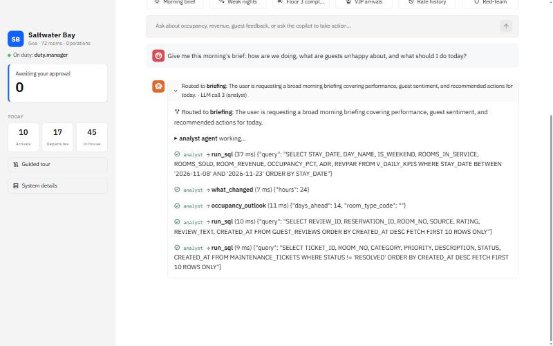
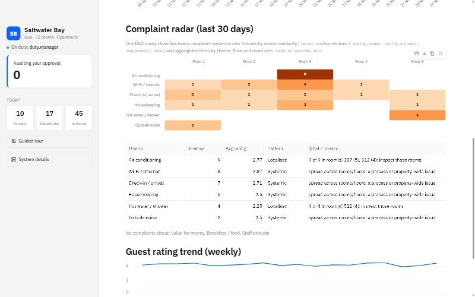
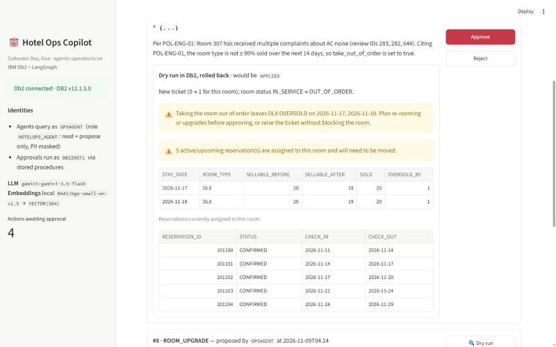
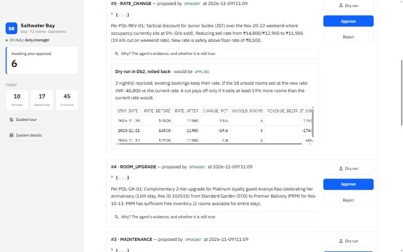
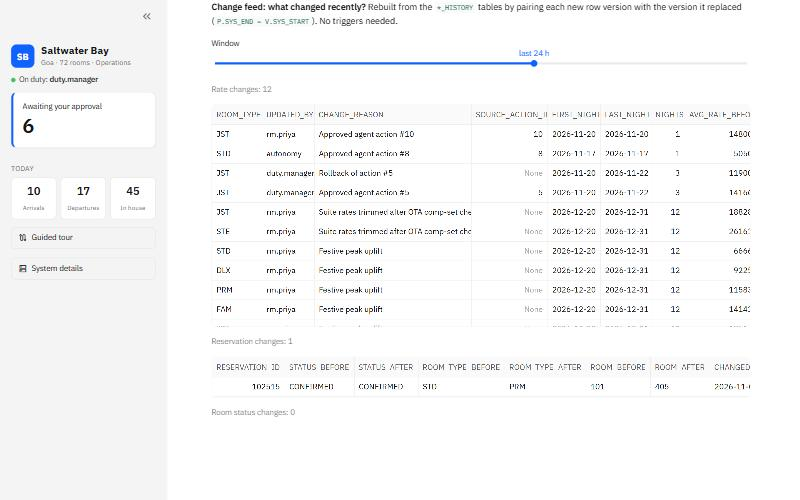
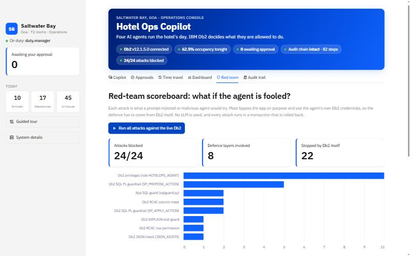

Occupancy lives in the property-management system, rates in a spreadsheet, and reviews across Google, TripAdvisor and OTAs. A rattling AC in room 307 is noticed only after many bad reviews, because nobody connects "aircon humming" and "AC noise" to one room.
Mid-size and independent hotels cannot afford revenue-management systems or analysts. Weak nights are discounted too late, sold-out conference nights are under-priced, and loyal VIPs arrive without anyone noticing it is their anniversary.
"Chat with your database" tools can run any SQL, leak guest PII to a third-party model, follow instructions hidden in a review (prompt injection), and make changes nobody can audit or undo.
No hotel will let an AI change prices or block rooms unless every change is explainable, checked against business rules, approved by a human and reversible. Prompts cannot guarantee that. The database can.
The manager talks in plain English. LangGraph agents read Db2, find problems and opportunities, and queue evidence-backed actions. Every safety guarantee lives inside IBM Db2.
SP_PROPOSE_ACTION, which validates them and blocks bad onesSP_APPLY_ACTION re-checks the guardrailsFOR SYSTEM_TIME AS OFOne click: KPIs, guest issues and the actions to approve, composed from three agents' findings.
Db2 vector search sorts every review sentence into themes and finds where each one clusters.
See exactly what an approval would change, including oversold nights, before you approve.
Every rate and booking version is kept; there's a change feed and one-click rollback.
Occupancy, ADR, RevPAR and pick-up from Db2 views, grounded in catalog comments.
The hotel handbook lives in Db2 via IBM langchain-db2; proposals cite policy IDs.
Guest e-mail and phone are masked for the AI; opted-out guests are invisible to it (DPDP Act 2023).
Managers grant the AI low-risk autonomy (e.g. ±5% price nudges). Db2 enforces the limits, and every change can be undone. 24/24 attacks are blocked.



The operations agent cited policy POL-ENG-01, claimed Deluxe was "not ≥ 90% sold", and proposed taking AC-fault
room 307 out of order.
The manager pressed Dry run. Db2 executed the real stored procedure inside a transaction, recomputed sellable inventory, and rolled back:
⚠️ Taking the room out of order leaves DLX OVERSOLD on 17–18 Nov (the conference nights). 5 reservations are assigned to this room.
AGENT_RUNSibm_db plus IBM's official langchain-db2, with two Db2 identitiesOPSAGENT, role HOTELOPS_AGENT: SELECT plus EXECUTE SP_PROPOSE_ACTION only. It sees PII masked and opted-out guests hidden.
Approves, rejects, dry-runs and rolls back through stored procedures. Runs the EXPLAIN cost check.
| Connector | Used for |
|---|---|
ibm_db 3.3 (native driver) | All agent tools as LangChain @tools; stored procedure calls with OUT parameters; prepared statements |
IBM langchain-db2 (DB2VS) | Policy handbook as a LangChain VectorStore on Db2 VECTOR(384), through ibm_db_dbi |
| Local embeddings (BGE-small, ONNX) | Review and policy vectors, so text never leaves the machine to be embedded |
| Docker: Db2 Community Edition 12.1 | docker compose up starts Db2 and the app together |
# every agent tool runs as the least-privileged identity agent_db = get_db("agent") # OPSAGENT, role HOTELOPS_AGENT def run_sql(query: str) -> str: safe = validate_select(query) # 1 statement, SELECT only check_cost(safe) # Db2 EXPLAIN PLAN, cost ceiling return agent_db.query(safe) # Db2 privileges + RCAC apply # agents can only PROPOSE: the procedure validates and queues agent_db.call("HOTELOPS.SP_PROPOSE_ACTION", run_id, "RATE_CHANGE", json.dumps(payload), rationale, 0, OUT_TEXT) # IBM langchain-db2: policy knowledge base on Db2 vectors kb = DB2VS(embedding_function=LocalBgeEmbeddings(), table_name="POLICY_KB", client=ibm_db_dbi_conn, distance_strategy=DistanceStrategy.COSINE) kb.similarity_search_with_score("upgrade a platinum guest")
The connection string sets CURRENTSCHEMA=HOTELOPS. Every credential comes from .env; none is committed.
| Db2 capability | Where | What it does for the copilot |
|---|---|---|
| VECTOR(384, FLOAT32)VECTOR_DISTANCE | REVIEW_CHUNKS, POLICY_KB | Sentence-level semantic review search; a complaint radar in one query (anchor vectors CROSS JOIN, ROW_NUMBER() OVER, GROUPING SETS) |
| System-period + bitemporal | RATE_PLAN, RESERVATIONS, ROOMS, PROMOTIONS | "Who changed the rate?"; a trigger-free change feed; one-click rollback (FOR SYSTEM_TIME AS OF); BUSINESS_TIME promotions answer "what was a guest quoted before the correction?" |
| SQL PL procedures | SP_PROPOSE / APPLY / REJECT / ROLLBACK | Price band, 35% cap, no past dates, real upgrades only, free room for the whole stay, consent, duplicates, and rollback integrity |
| Transactional dry run | dedicated unit of work + ROLLBACK | Runs the real apply procedure, diffs the impact (oversold nights, guests to move, revenue at stake), then persists nothing |
| RCAC masks + row permission | GUESTS | E-mail and phone masked for the AI; guests who withdrew consent are invisible to it (DPDP Act 2023) |
| Roles & GRANT / REVOKE | HOTELOPS_AGENT | The AI can read and propose, never write. CREATETAB and IMPLICIT_SCHEMA are revoked from PUBLIC |
| EXPLAIN PLAN | SYSTOOLS.EXPLAIN_* | The optimizer costs every AI-written query before it runs; runaway plans are refused (legitimate queries cost 78–2,089 timerons) |
| JSON_EXISTS / JSON_VALUE | AGENT_ACTIONS | Validated structured proposals (check constraint) parsed inside the procedures |
| Views, MQT, COMMENT ON, SYSCAT | V_DAILY_KPIS, MQT_DAILY_KPIS | A semantic layer for text-to-SQL; exact column lists are fed to the agents, so they don't guess |
| Tamper-evident audit | AGENT_STEPS trigger + HASH | Every tool call SHA-256 hash-chained by Db2 and anchored outside it: an edited step, or even a fully rebuilt ledger, is caught; replay without an LLM |
| # | Step | What happens |
|---|---|---|
| 1 | Question | The manager asks; the run is logged in AGENT_RUNS, with memory replayed from earlier turns of the thread |
| 2 | Routing | The LLM router returns a typed RouteDecision, with a keyword fallback if structured output fails |
| 3 | Evidence Db2 | Specialists query as OPSAGENT: SQL costed by EXPLAIN, vector search, time travel. Privileges and RCAC apply |
| 4 | Proposal Db2 | SP_PROPOSE_ACTION validates the JSON, references, price band, dates, consent and duplicates, then queues it as PENDING |
| 5 | Dry run Db2 | The real apply procedure runs in a transaction; the UI shows the diff and warnings, then ROLLBACK |
| 6 | Approval Db2 | A human approves, or Db2 auto-applies the action if it is within the earned-autonomy limits (AUTONOMY_POLICY); SP_APPLY_ACTION re-checks the 35% cap, upgrade tier and room availability, then applies the change to the temporal tables |
| 7 | Undo Db2 | SP_ROLLBACK_ACTION restores the rows AS OF the moment before the change, and refuses if someone changed them again |
The attacks bypass the app and use the agent's own Db2 credentials. Each runs in a transaction that is rolled back.
Attacks include deleting guests, a ₹500 suite, self-approval, dumping PII, bypassing consent, a cross-join overload, a −40% price swing, a fake "upgrade", and a prompt injection hidden in a guest review.
verify.py / Proofs tab); 157 tests, 87% coverage


The duty manager clicks Morning brief. Within minutes the copilot reports tonight's occupancy, flags AC faults in rooms 307/312 and no hot water in 512, spots zero suite pick-up for 20–23 Nov and the sold-out conference nights, and queues 6 actions: two repairs, an anniversary upgrade for a Platinum guest, and three rate changes. Each action can be dry-run first (in one recorded run this caught an action that would oversell Deluxe). The manager approves, and can undo any of them later.
ibm_db, IBM langchain-db2, ibm_db_dbi# Db2 + app, no local Python cp .env.example .env docker compose up -d # open http://localhost:8501 # prove every claim, no API key python src/verify.py # 28/28 python src/fuzz_guardrails.py # 10k/10k python src/benchmark_scale.py # 1M rows pytest -q tests/ # 157 tests python src/evaluate.py # 30/30
It works without an API key too: approvals, dry run, time travel, radar, red team and replay of recorded runs.